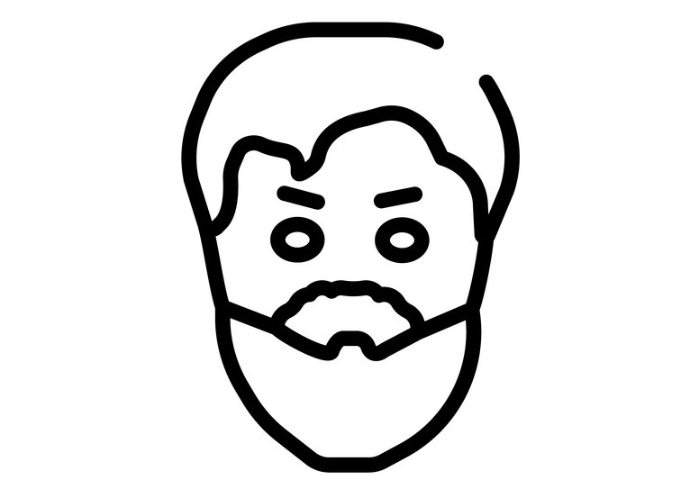

Бенедикт Спиноза
24 ноября 1632 г. - 21 февраля 1677 г.

Детство и юность
Бенедикт, или Барух, де Спиноза родился 24 ноября 1632 года в семье голландских евреев-сефардов, изгнанных из Португалии. Отец владел бизнесом по торговле фруктами, а мать помогала ему в лавке, занималась домашним хозяйством и следила за пятерыми детьми.
Следуя традициям религиозных предков, будущий философ ходил в специализированную школу, где, помимо общеобразовательных предметов, изучали Талмуд и иврит. Там наравне с раввинистической литературой он познакомился с трудами древних мыслителей, которые переводил и интерпретировал иудейский богослов Моисей Маймонид.
Вскоре под началом опытных педагогов Саула Мортейра и Менаше бен Исраэля Бенедикт овладел азами латыни и выучил португальский и испанский языки. Он начал интересоваться светскими произведениями, но это не помешало после смерти родителя по старому иудейскому обычаю читать траурную молитву кадиш.
Получив наследство, Спиноза отказался продолжать семейный бизнес и передал права собственности младшему брату и старшей сестре. Он познакомился с коллегиантами и вскоре был изгнан из еврейской общины, благодаря чему сумел продолжить образование в частном иезуитском колледже.
Юноша занимался углубленным изучением естествознания и философии, и больше других его интересовали работы, которые написал Рене Декарт. Зарабатывать на жизнь пришлось преподаванием иврита и шлифовкой оптических стекол, что дало возможность подготовить к печати первый анонимный научный трактат.
В конце 1650-х годов Спиноза возглавил кружок мыслителей, что в корне изменило его биографию и повлияло на последующую жизнь. Его признали угрозой благочестию и морали и принудительно выдворили из Амстердама за то, что он был связан с протестантами и открыто поддерживал рационализм.
Философия Спинозы
Спиноза о субстанции, её атрибутах и модусах
Идея субстанции занимает центральное место в философской системе Спинозы. Субстанция абсолютна, бесконечна, независима. Она – причина самой себя; она есть то, что делает вещи реальными, то, в силу чего они существуют и возникают. Как Первопричина, она называется Богом, но это слово Спиноза понимает не в христианском смысле. В его философии Бог – не надмировой личный Дух, а только сущность вещей. Атрибуты, т. е. свойства единой субстанции чрезвычайно многочисленны, но из них человек познаёт только те, которые он находит в самом себе, а именно – мышление и протяженность. Единичные вещи, согласно Спинозе, лишены всякой самостоятельности, они – только модусы бесконечной субстанции, изменчивые состояния Бога. Вещи не извлекаются от Бога ни творением, ни эманацией (последовательным «истечением» высшего из низшего). Они с необходимостью следуют из природы Бога так же, как из природы треугольника следует, что сумма его углов равна двум прямым.
Спиноза о Боге
Вещи находятся в Боге. Он в философии Спинозы – не трансцендентный Творец, Он – действующая, созидающая природа (natura naturans) в противоположность совокупности конечных вещей, как природы страдательной, созданной (natura naturata). Деятельность Бога, ни от чего не завися, сама себя определяя, подчиняется внутренней необходимости, которая вытекает из природы Божества. Это не делает субстанцию несовершенной; наоборот, произвол и непостоянство, как дефекты, должны быть исключены из идеи Бога. Таким образом, утверждая положение: «все, что есть, есть в Боге, а без Бога ничего не может существовать и не может быть представлено», философия Спинозы становится на почву самого решительного пантеизма – учения о полном единстве Творца и Мира. Все совершающееся в мире – этом проявлении Бога или природы (Deus sive natura) – строго определено, и бесконечно длинный ряд причин заканчивается только вне области явлений, заканчивается в божественной Первопричине.
Спиноза о духе и теле
Так как протяженность и мышление у Спинозы – не две отдельных субстанции, как у Декарта, а лишь атрибуты единой субстанции, то тело и дух, на самом деле, не два самостоятельных факта, а только две стороны одного и того же целого. Душа есть не что иное, как идея тела, а тело или движение – предмет, соответствующий известной идее. Всякой идее соответствует что-нибудь телесное; всякое тело существует и мыслится как идея. Отсюда вытекает, что порядок действия нашего тела по природе одновременен порядку действия души; так Спиноза решает в своей философии проблему отношения между духом и материей.
Этика Спинозы
В области человеческой нравственности Спиноза тоже видит во всем разумную необходимость. Этика для него – это физика нравов. Спиноза отвергает свободу воли, он отрицает даже существование самой воли, которую отождествляет с разумом. Добра и зла в мировом процессе вовсе не существует; все действительное само по себе совершенно: добро и зло, активность и пассивность, могущество и бессилие – это лишь различия в степенях, Основой добродетели служит стремление к самосохранению; содержание этики указывается познанием. Только та деятельность, которая зиждется на познании, может быть, согласно философии Спинозы, истинно нравственной. Только разум побеждает аффекты, только интеллектуальным путем достигаем мы блаженства. Нет слепых нравственных инстинктов, и этика Спинозы строится на рационалистическом фундаменте. Высшее добро и высшая добродетель заключаются в познании Бога и любви к Нему, познании и любви, неразрывно связанных между собою и в своем синтезе образующих интеллектуальную любовь к Богу (amor Dei intellectualis). Жизнь духа заключается в мышлении, в стремлении к совершенному познанию, к постижению разумной необходимости, сообразно которой мы должны действовать, если хотим быть свободными в настоящем смысле этого слова. Кто познает себя, свои аффекты, тот, согласно этическим взглядам Спинозы, проникается любовью к Богу, и в этой радостной любви духовно сливает себя с вечной сущностью Бога, природы, мира.
Личная жизнь
Согласно фотокопиям сохранившихся документов, Спиноза не заботился о личной жизни, поэтому у него никогда не было ни жены, ни детей. Он вел одинокое существование в Рейнсбурге, Ворбюрге и Гааге, зарабатывая шлифовкой оптики и получая пожертвования от друзей.
Смерть
Причиной смерти Бенедикта Спинозы 21 февраля 1677 года стал туберкулез легких, который связывали с курением табака. Тело попало в общую могилу, имущество и письма подверглись уничтожению, а чудом уцелевшие философские трактаты издали без имени автора.
Основные труды
Из философских сочинений Спинозы главными являются его знаменитая «Этика», «Трактат об усовершенствовании разума» (ок. 1662) и «Богословско-политический трактат» (1670). В «Этике» Спиноза задался целью представить такую систему положений о Боге, человеческом духе и материальном мире, которая своей непоколебимостью походила бы на неразрывную цепь математических умозаключений. Вот почему Спиноза и употребил в своем труде геометрический метод и, подобно Евклиду, построил целый ряд философских теорем, из которых одна опирается на другую. Он бесстрастно анализирует человеческие действия и, чуждый всякой телеологии (учения о деятельном, целенаправленном руководстве бытия высшей силой), замыкает мир в рамки безусловной необходимости. Спиноза обладал необыкновенным даром систематизации. То, что он воспринял от философии Декарта, он развил с отважной последовательностью и все разнообразие мировых явлений свел к единой субстанции – Богу, которая, однако, лишена произвольной, свободной воли в её обычном понимании.
Галерея